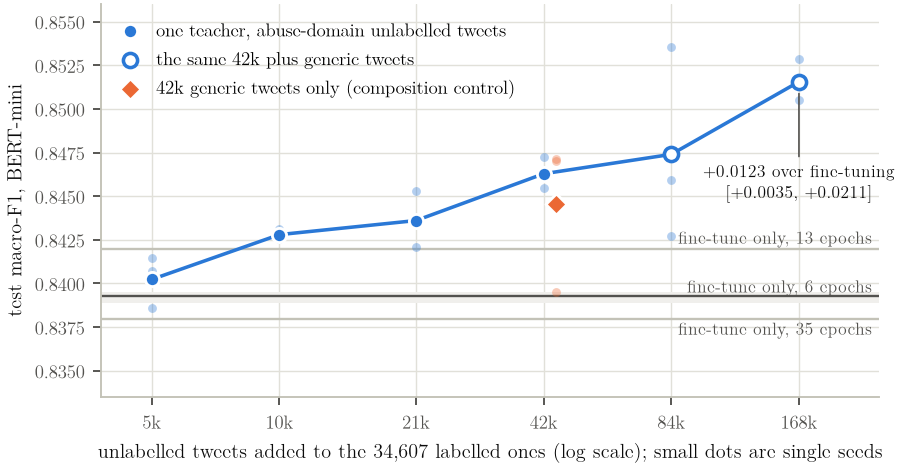
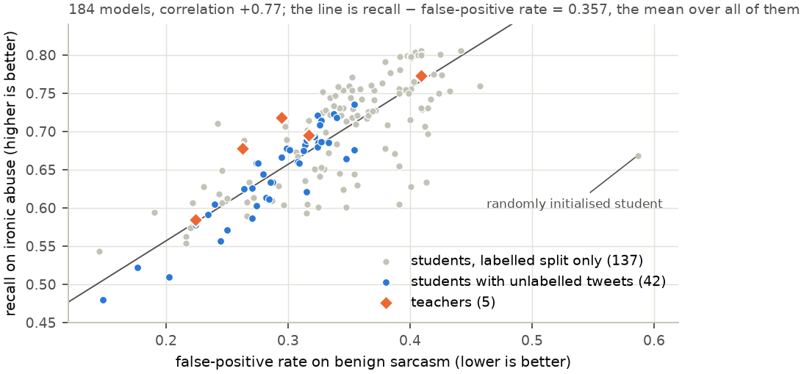

সুপারভাইজারকে ব্রিফ করার জন্য। তারিখ: ২২ সেপ্টেম্বর ২০২৬। প্রতিটি সংখ্যা Kaggle-এর ফলাফল ফাইল থেকে নেওয়া, আন্দাজে লেখা নয়। স্কোর মানে test set-এর macro-F1 (১.০ হলো নিখুঁত), যদি আলাদা করে বলা না থাকে।
Phase 2 (ফেব্রুয়ারি ২০২৬): Wikipedia corpus-এ দুইটি teacher (BERT-large ও RoBERTa) থেকে DistilBERT student-কে শেখানো হয়েছিল, প্রতি batch-এ dynamic weighting দিয়ে। Student পেয়েছিল 0.8947, teacher দুটি 0.8936 ও 0.8904। শুনতে ভালো, কিন্তু তিনটি জিনিস ছিল না:
Phase 3-এর শুরুতে (টুইট ডেটাসেটে): আগের কোডে teacher ছাড়া DistilBERT পেয়েছিল 0.859, আর D-MTHD student পেয়েছিল 0.830, অর্থাৎ teacher দেওয়ায় ফল খারাপ হচ্ছিল। weight-গুলোও আটকে ছিল। ডেটাতেও সমস্যা ছিল: একই টুইট ভিন্ন লেবেলে, আর train ও test-এ একই টুইট।
| কী | কী করলাম | কেন |
|---|---|---|
| ডেটা পরিষ্কার | 47,692 টুইট থেকে 3,168টি পরস্পরবিরোধী লেবেলের টুইট, 507টি ডুপ্লিকেট ও 758টি খুব ছোট টুইট বাদ। থাকল 43,259: train 34,607, validation 4,326, test 4,326। | একই টুইট যদি train ও test দুই জায়গাতেই থাকে, তাহলে স্কোর মিথ্যা বেশি দেখায়। |
| ন্যূনতম মান (floor) | সাধারণ TF-IDF + logistic regression: 0.8798 | কোনো neural model এর নিচে গেলে তা কাজের নয়। |
| Teacher | BERT-large 0.8973, RoBERTa-irony 0.8926, HateBERT 0.8887; পরে DeBERTa-v3 0.8720 ও implicit specialist 0.8931 | তিনটি ভিন্ন দক্ষতা: সাধারণ ভাষা, গালাগালি, ব্যঙ্গ। |
| Student | পাঁচটি: BERT-mini (11.2M, প্রধান), BERT-small (28.8M), DistilBERT (67M), DeBERTa-v3-xsmall (70.8M), BiLSTM (10.4M) | একটি student-এ ফল দেখলে সেটা কাকতালীয় হতে পারে। |
| ন্যায্য তুলনা | প্রতিটি student-কে teacher ছাড়াও train করা, প্রতিটি পরীক্ষা ৩ বার (৩টি seed), প্রতিটি তুলনায় paired bootstrap interval | ফারাক সত্যি না কাকতালীয়, সেটা বোঝার একমাত্র উপায়। |
| Sarcasm মাপা | 883টি নিরীহ sarcasm টুইট ও 1,560টি ব্যঙ্গাত্মক bullying টুইট; threshold ছাড়া মাপ (AUC) | থিসিসের আসল লক্ষ্য ছিল ইঙ্গিতে করা bullying ধরা। |
| Implicit benchmark | Implicit Hate Corpus থেকে আলাদা benchmark (16,509 / 2,064 / 2,064); ISHate (27,096) সম্পূর্ণ আলাদা রাখা | দুই corpus মেশালে মডেল ইঙ্গিত না বুঝে শুধু "কোন corpus থেকে এসেছে" চিনে ফেলে (0.91 নির্ভুলতায়)। |
Statistically significant মানে সহজ ভাষায়: test set-কে ১০০০ বার নতুন করে নমুনা নিয়ে দেখা হয় ফারাকটা টিকে থাকে কিনা। যদি ৯৫% ক্ষেত্রে ফারাক শূন্যের উপরে থাকে, তাহলে সেটা সত্যিকারের উন্নতি। আমাদের test set-এ মোটামুটি 0.007-এর চেয়ে ছোট ফারাক ধরা যায় না।
Kaggle Session 1 ও 4-এ ১৩১টি run। প্রধান student BERT-mini-এর ফল:
| পদ্ধতি | স্কোর | teacher ছাড়ার তুলনায় | ফল |
|---|---|---|---|
| Teacher ছাড়া (fine-tune only) | 0.8393 | ভিত্তি | |
| একটি teacher (BERT-large) | 0.8405 | +0.0012 | পার্থক্য নেই |
| তিন teacher-এর সাধারণ গড় | 0.8385 | −0.0007 | পার্থক্য নেই |
| আমাদের D-MTHD (dynamic weighting) | 0.8378 | −0.0015 | পার্থক্য নেই |
| D-MTHD + DeBERTa teacher | 0.8373 | −0.0019 | পার্থক্য নেই |
| D-MTHD + implicit specialist teacher | 0.8373 | −0.0019 | পার্থক্য নেই |
| Pre-training ছাড়া student | 0.7905 | −0.0488 | একমাত্র বড় পার্থক্য |
বাকি চারটি student-এও একই: teacher দিলে স্কোর সামান্য বাড়ে (0.001 থেকে 0.007), কিন্তু কোনোটাই significant নয়। যেমন DistilBERT 0.8907 থেকে 0.8975, BiLSTM 0.8693 থেকে 0.8764।
Dynamic weighting বনাম সাধারণ গড়: পাঁচটি student-এর কোনোটাতেই D-MTHD সাধারণ গড়কে হারায়নি। Weighting-কে তীক্ষ্ণ করার temperature (τ) 0.05 থেকে 5 পর্যন্ত ১০০ গুণ বদলেও স্কোর 0.8385 থেকে 0.8392-এর মধ্যে থেকেছে। Weight প্রায় সমান থেকেছে: সবচেয়ে ভারী teacher-ও গড়ে 0.356, যেখানে সমান ভাগ হলো 0.333।
বাড়তি উপাদান খুলে দেখা (ablation): irony head, hidden-state term, dynamic weight, প্রতিটি সরালে স্কোর বদলায় সর্বোচ্চ 0.0014, আর weighting সরালে বরং 0.0008 বাড়ে। "Homogeneous" অংশের (hidden-state term) অবদান মাত্র 0.0009।
আমাদের ক্ষেত্রে ঠিক এটাই হয়েছে, এবং আমরা তা মেপে দেখিয়েছি:
আমরা 42,013টি নতুন টুইট জোগাড় করলাম (OLID, Davidson, HatEval এবং আমাদের ডেটার বাদ পড়া টুইট), লেবেল ছাড়া। প্রতিটি টুইট train, validation, test ও সব probe set-এর সাথে মিলিয়ে দেখা হয়েছে, মিললে বাদ; প্রায় ১০,০০০ টুইট এভাবে বাদ গেছে। Student এই টুইটগুলোতে শুধু teacher-এর soft label অনুকরণ করে।
| পদ্ধতি (BERT-mini, 42,013 নতুন টুইট) | স্কোর | teacher ছাড়ার তুলনায় | ফল |
|---|---|---|---|
| একটি teacher + নতুন টুইট | 0.8466 | +0.0073 | প্রথম সত্যিকারের উন্নতি |
| তিন teacher-এর গড় + নতুন টুইট | 0.8462 | +0.0070 | একটি teacher-এর মতোই |
| DeBERTa সহ committee + নতুন টুইট | 0.8477 | +0.0084 | significant |
| সংশোধিত weighting + নতুন টুইট | 0.8484 | +0.0091 | significant |
| Soft label-এর বদলে শুধু hard label | 0.8412 | +0.0020 | প্রায় কিছুই না |
এখান থেকে তিনটি শিক্ষা: (১) লাভটা আসে নতুন টুইট থেকে, teacher-এর সংখ্যা থেকে নয়: তিন teacher আর এক teacher প্রায় সমান (−0.0003)। (২) লাভটা আসে soft label থেকে: শুধু hard label দিলে লাভ প্রায় শূন্য। (৩) ১২টি soft-label run-এর প্রতিটি teacher ছাড়া প্রতিটি run-এর উপরে।
প্রতিটি run-এর আগে আমরা লিখে রেখেছিলাম কী ফল আশা করছি এবং কী সিদ্ধান্ত নেব, তারপর script দিয়ে মিলিয়েছি। যাতে কেউ বলতে না পারে আমরা ফল দেখে গল্প বানিয়েছি।
| পরীক্ষা (BERT-mini, একটি teacher) | নতুন টুইট | স্কোর | teacher ছাড়ার তুলনায় |
|---|---|---|---|
| Teacher ছাড়া, সাধারণ training (6 epoch) | 0 | 0.8393 | ভিত্তি |
| + 5,000 টুইট | 5,000 | 0.8402 | +0.0010 |
| + 10,000 টুইট | 10,000 | 0.8428 | +0.0035 |
| + 21,000 টুইট | 21,000 | 0.8436 | +0.0043 |
| + 42,000 টুইট | 42,013 | 0.8463 | +0.0070 |
| + 84,000 টুইট (সাধারণ টুইট যোগ করে) | 84,000 | 0.8474 | +0.0081 |
| + 168,000 টুইট | 168,000 | 0.8516 | +0.0123, significant |
| নিয়ন্ত্রণ ১: শুধু সাধারণ টুইট (sentiment, emoji), গালাগালি নয় | 42,013 | 0.8445 | +0.0053 |
| নিয়ন্ত্রণ ২: নতুন টুইট ছাড়া, 13 epoch লম্বা training | 0 | 0.8420 | +0.0027 |
| নিয়ন্ত্রণ ৩: নতুন টুইট ছাড়া, 35 epoch লম্বা training | 0 | 0.8380 | −0.0013 |

চিত্র ১: যত বেশি নতুন টুইট, তত ভালো স্কোর। ধূসর রেখাগুলো নতুন টুইট ছাড়া লম্বা training, যা কোনো কাজে আসে না।
| অন্য student-এও কাজ করে কি? | teacher ছাড়া | + 168,000 টুইট | লাভ | ফল |
|---|---|---|---|---|
| BERT-mini (11.2M) | 0.8393 | 0.8516 | +0.0123 | significant |
| BERT-small (28.8M) | 0.8469 | 0.8526 | +0.0057 | বাড়ে, কিন্তু significant নয় |
| BiLSTM (10.4M) | 0.8693 | 0.8856 | +0.0163 | significant, সবচেয়ে বেশি |
BiLSTM মাত্র 10.4M parameter নিয়ে এখন TF-IDF floor (0.8798) পার করেছে এবং DistilBERT-এর (67M, 0.8907) খুব কাছে, ছয় ভাগের এক ভাগ আকারে। আর এই পদ্ধতিতে ব্যবহারের সময় (inference) কোনো বাড়তি খরচ নেই: নতুন টুইট শুধু training-এ লাগে।
থিসিসের মূল লক্ষ্য ছিল ইঙ্গিতে বা ব্যঙ্গে করা bullying ধরা। আমরা এটা মেপেছি এমনভাবে যাতে threshold-এর উপর নির্ভর না করে: মডেল কতটা ভালোভাবে ক্ষতিকর ব্যঙ্গকে নিরীহ ব্যঙ্গের উপরে রাখে (AUC; 0.5 মানে আন্দাজ, 1.0 মানে নিখুঁত)।

চিত্র ২: ১৮৪টি মডেল একই রেখায়। কোনো পদ্ধতি রেখার উপরে ওঠে না, শুধু রেখা বরাবর সরে।
| # | কোনটার সাথে কোনটা | কেন এই তুলনা | উত্তর |
|---|---|---|---|
| ১ | Teacher সহ বনাম teacher ছাড়া (লেবেলযুক্ত ডেটায়) | Distillation আদৌ কাজ করে কিনা | না, significant নয় |
| ২ | তিন teacher বনাম এক teacher | বেশি teacher দিলে লাভ কিনা | না |
| ৩ | Dynamic weighting বনাম সাধারণ গড় | আমাদের মূল পদ্ধতি কাজ করে কিনা | না, কোনো τ-তেই |
| ৪ | DeBERTa teacher যোগ বনাম না | ভিন্ন ধরনের teacher দিলে লাভ কিনা | না |
| ৫ | Implicit specialist যোগ বনাম না | ইঙ্গিতের জ্ঞান student-এ যায় কিনা | না |
| ৬ | Specialist একা; implicit ডেটায় pre-train | উপরের ফলের নিয়ন্ত্রণ পরীক্ষা | না |
| ৭ | Hidden-state term সহ বনাম ছাড়া | "Homogeneous" অংশ কাজ করে কিনা | না (+0.0009) |
| ৮ | Pre-trained বনাম random student | Pre-training-এর মূল্য কত | অনেক (−0.049) |
| ৯ | লেবেলযুক্ত ডেটা বনাম + নতুন টুইট | Out-of-sample distillation কাজ করে কিনা | হ্যাঁ (+0.007) |
| ১০ | Soft label বনাম hard label | লাভ কি soft label থেকে | হ্যাঁ (+0.007 বনাম +0.002) |
| ১১ | Committee বনাম এক teacher, নতুন টুইটে | নতুন টুইটে কি বেশি teacher লাগে | না, একজনই যথেষ্ট |
| ১২ | 5,000 থেকে 168,000 টুইট | বেশি টুইটে বেশি লাভ কিনা | হ্যাঁ, প্রতি ধাপে |
| ১৩ | গালাগালির টুইট বনাম সাধারণ টুইট | টুইটের বিষয় জরুরি কিনা | সামান্য; সাধারণ টুইটেও চলে |
| ১৪ | নতুন টুইট ছাড়া লম্বা training | লাভটা কি শুধু বেশি training-এর | না, টুইটের কারণেই |
| ১৫ | BERT-small ও BiLSTM-এ একই পরীক্ষা | অন্য মডেলেও কাজ করে কিনা | হ্যাঁ (BiLSTM significant) |
| ১৬ | সব মডেলের sarcasm AUC | ইঙ্গিত চেনার ক্ষমতা বাড়ে কিনা | না, কোনো পদ্ধতিতেই |
| আমরা যা দেখিয়েছি (অর্জন) | যা দাবি করি না |
|---|---|
|
|
আগে থেকে লেখা ১১টি ভবিষ্যদ্বাণীর ফল: ৬টি সত্যি হয়েছে, ২টি আংশিক, ৩টি ভুল হয়েছে, এবং ভুলগুলোও থিসিসে লেখা আছে। যেমন আমরা ভেবেছিলাম নতুন টুইটে committee এক teacher-এর চেয়ে ভালো শেখাবে; তা হয়নি।
পুরোনো শিরোনাম: A Dynamic Multi-Teacher Homogeneous Knowledge Distillation Framework for Robust Cyberbullying Detection। এর প্রতিটি মূল শব্দ আমরা মেপেছি: Dynamic weighting গড়ের চেয়ে ভালো নয়; Multi-Teacher এক teacher-এর চেয়ে ভালো নয়; Homogeneous অংশের অবদান 0.0009; আর Robust নয়, কারণ বানান বিকৃত করলে স্কোর 0.839 থেকে 0.712-তে নামে এবং distillation তা আটকায় না। তাই নতুন শিরোনাম সেটাই বলে যা আসলে প্রমাণিত: নতুন লেবেলবিহীন টুইট সাহায্য করে, বেশি teacher করে না।
| Kaggle session | কী হলো | GPU ঘণ্টা |
|---|---|---|
| ১ | পাঁচ student, তিন committee: লেবেলযুক্ত ডেটার পুরো পরীক্ষা (১২০ run) | 8.24 |
| ২ ও ৩ | ব্যর্থ (একটি resume bug, একটি আটকে যাওয়া cell); দুটোই ঠিক করা হয়েছে | -- |
| ৪ | Implicit specialist, নিয়ন্ত্রণ পরীক্ষা, তীক্ষ্ণ τ | 1.41 |
| ৫ | প্রথম out-of-sample পরীক্ষা (42,013 টুইট) | 2.11 |
| ৬ | 5,000 থেকে 168,000 টুইটের পরীক্ষা ও নিয়ন্ত্রণ | 3.52 |
| ৭ | 35 epoch নিয়ন্ত্রণ, BERT-small ও BiLSTM | 3.16 |
| মোট: ১৭৯টি student run | 18.44 |
এখন: পুরো thesis draft LaTeX-এ (BRAC format) তৈরি, আটটি অধ্যায়, সাতটি চিত্র, পাঁচটি appendix। জমা ২৬ সেপ্টেম্বর, slides ২৯ সেপ্টেম্বর, defense ৩ অক্টোবর। আর কোনো GPU পরীক্ষা বাকি নেই।
| প্রশ্ন | ছোট উত্তর |
|---|---|
| তাহলে কি আমাদের মূল পদ্ধতি ব্যর্থ? | লেবেলযুক্ত ডেটায় হ্যাঁ, এবং আমরা কারণ মেপে দেখিয়েছি। সেই কারণ থেকেই কাজ করা পদ্ধতিটি পেয়েছি। এটা একটা সম্পূর্ণ গবেষণার গল্প। |
| P2-তে তো কাজ করেছিল? | P2-তে একবার run, আর teacher ছাড়া student-এর তুলনা ছিল না। সেই তুলনা আর তিনটি run যোগ করলে ফারাক কাকতালীয় প্রমাণিত হয়। |
| +0.012 কি যথেষ্ট? | এটা significant, টুইট বাড়ালে বাড়ে, inference-এ বাড়তি খরচ নেই, আর BiLSTM-এ +0.016 যা একটি 10M মডেলকে 67M মডেলের কাছে নিয়ে যায়। |
| এটা কি শুধু বেশি training? | না। নতুন টুইট ছাড়া একই পরিমাণ training করে দেখেছি, কোনো লাভ নেই। |
| Sarcasm-এর লক্ষ্য তো পূরণ হলো না? | পূরণ হয়নি, এবং আমরা দেখিয়েছি কেন: এই ক্ষমতা pre-training থেকে আসে। ভবিষ্যতে দরকার এমন টুইট যেখানে sarcasm বা ইঙ্গিত লেবেল করা আছে। |
| Journal-এ পাঠানো যাবে? | হ্যাঁ: নিয়ন্ত্রিত পরীক্ষা, ব্যাখ্যা, আর একটি কাজ করা পদ্ধতি একসাথে আছে। তার আগে দ্বিতীয় ডেটাসেট যোগ করলে আরও শক্ত হবে। |